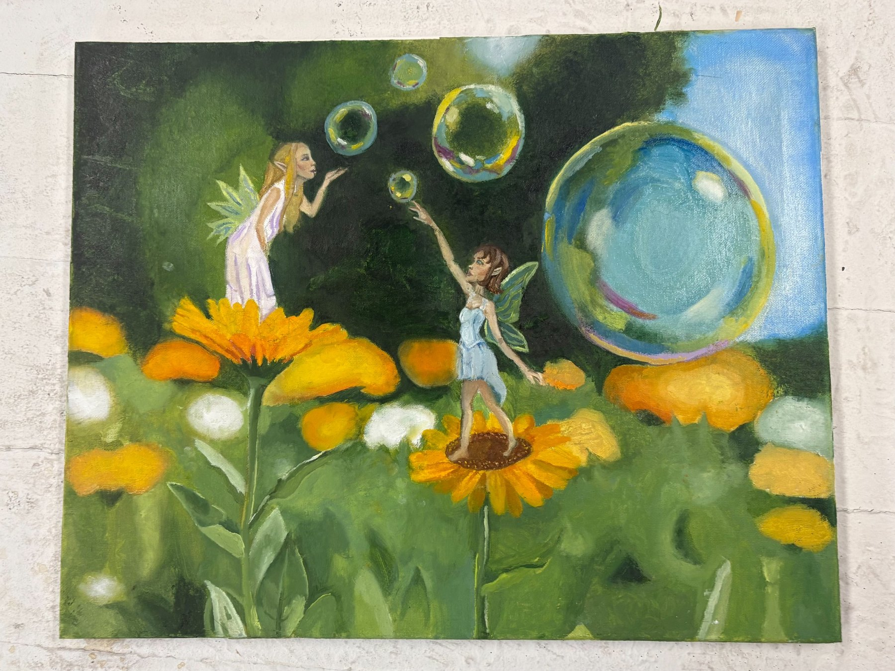
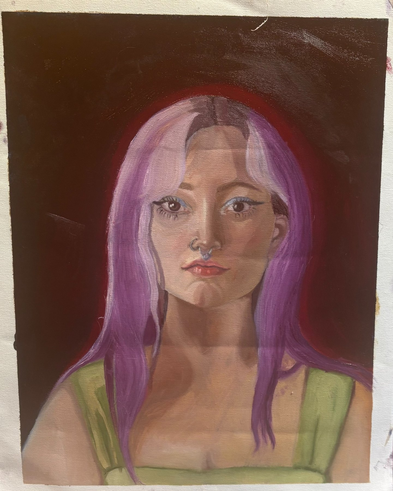
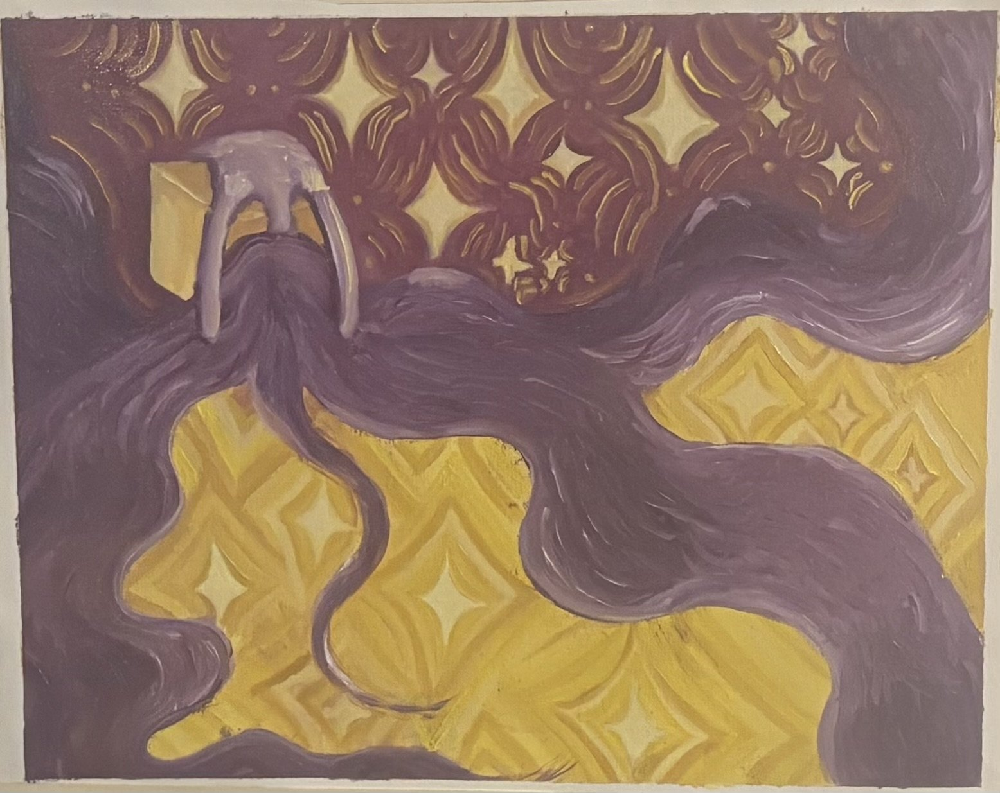
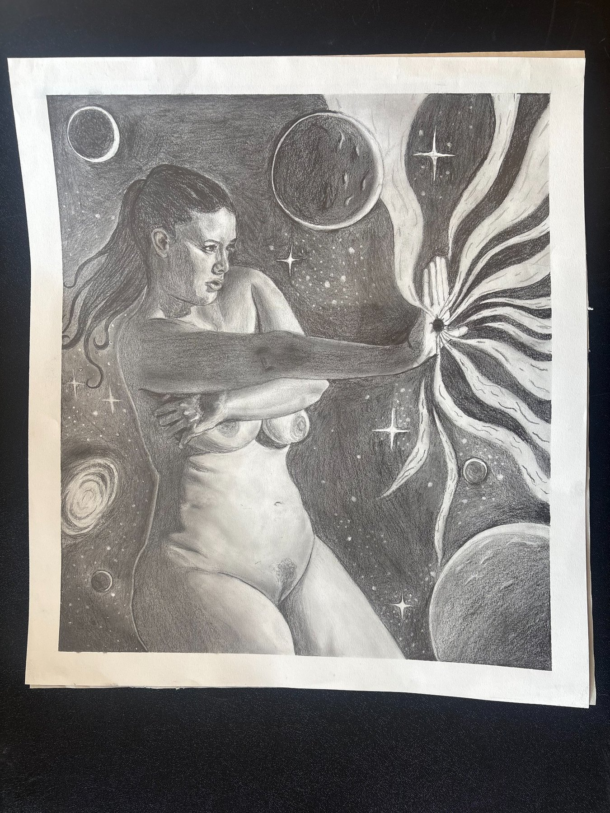
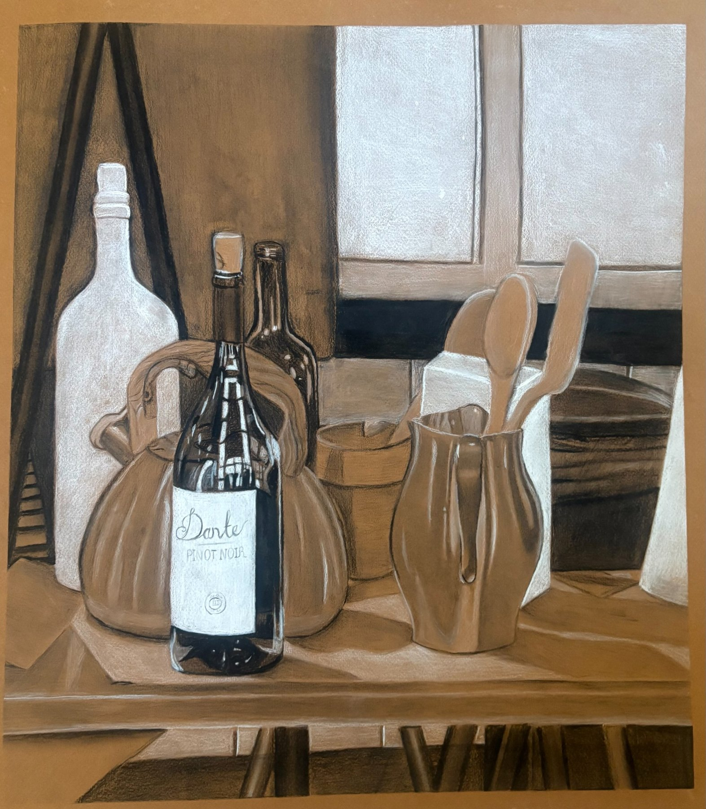
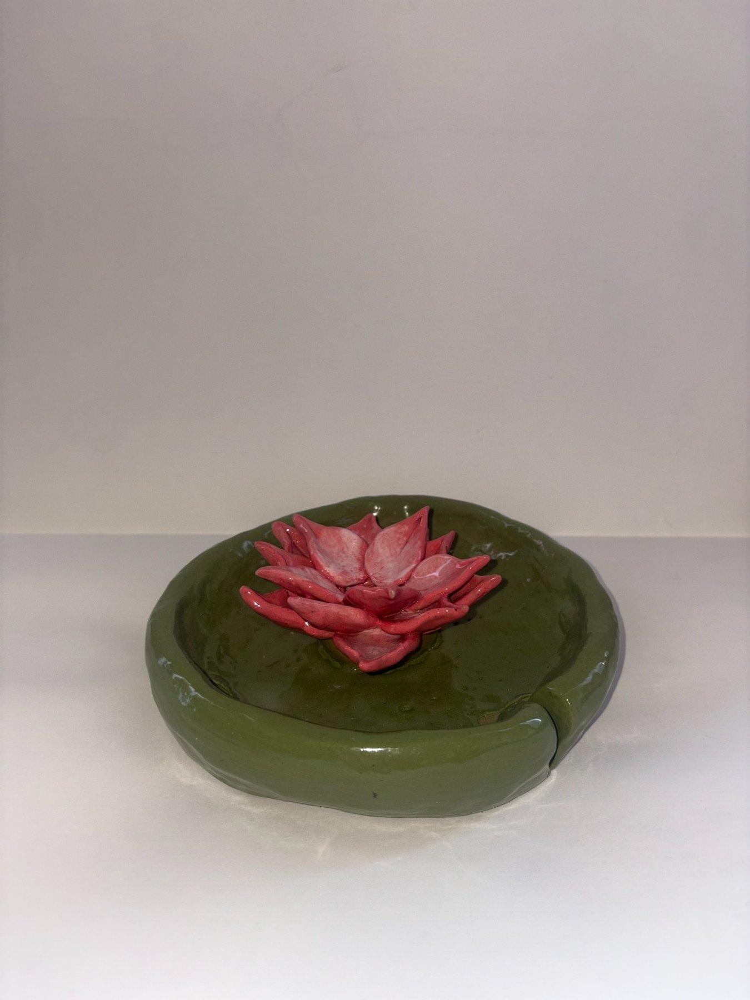
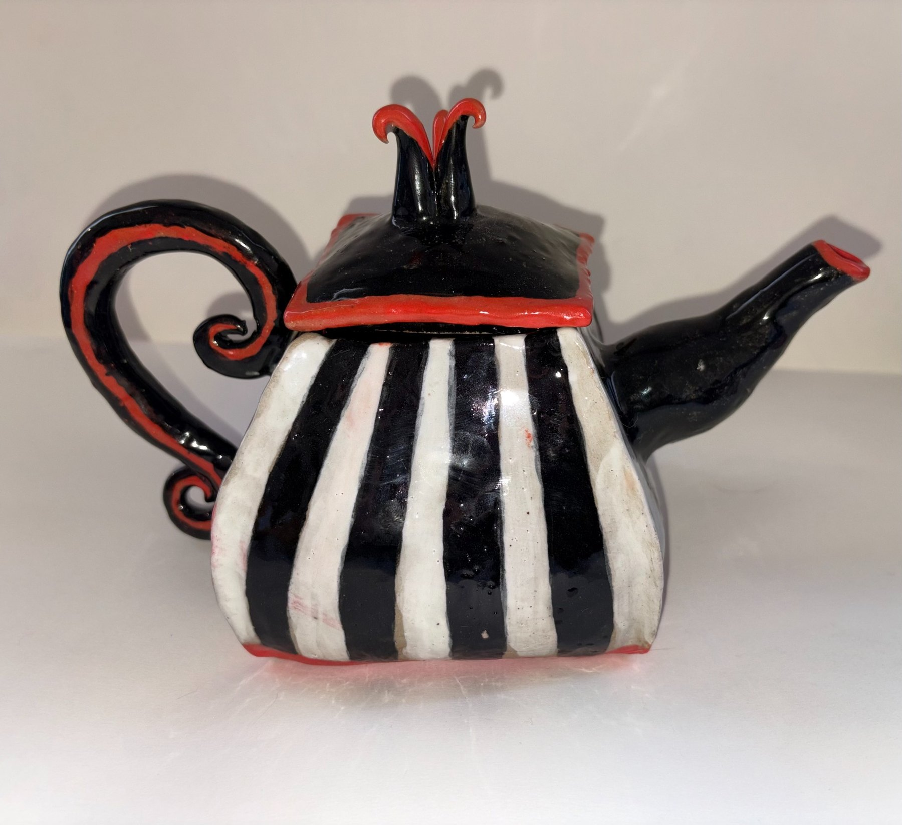

Portfolio for art therapy applications
Selected artwork and process-based studies.
I am a psychology graduate preparing for master's-level study in art therapy. I am interested in how art can help people reflect, communicate, and work through difficult experiences.
Selected Work
Current portfolio pieces. Titles, years, media, and descriptions can be edited as needed.

Two figures among flowers and bubbles.

Portrait study with strong color and direct gaze.

Decorative pattern study with movement and contrast.

Figure study with stars, planets, and radiating forms.

Still life study of bottles, vessels, and kitchen objects.

Glazed ceramic dish with a hand-built flower form.

Glazed ceramic teapot with striped form and red accents.
About
My interest in art therapy comes from wanting to help people talk about and work through what they are experiencing, while also supporting their creativity. I am drawn to art-making because it can make space for things that are hard to explain directly.
Preparation
Psychology
B.S. in Psychology, Virginia Commonwealth University. Coursework in abnormal psychology, child psychopathology, development, stress management, positive psychology, statistics, and research methods.
Helping coursework
Coursework included Communication in the Helping Process and Introduction to the Helping Relation, including a structured peer helping conversation completed for class.
Studio art
Coursework in ceramics, drawing, painting, and art appreciation.